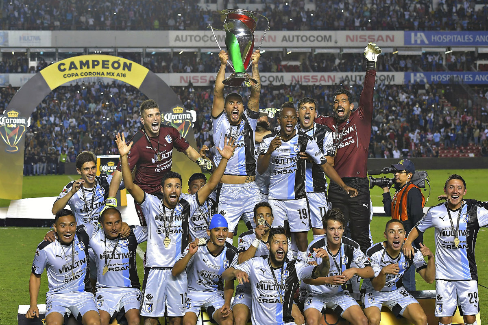

Works (Hitos)
La final del Clausura 2015
2015 · Liga MX

La primera final de liga en la historia del club. Perdieron ante Santos, pero la campaña dio acceso a la Concachampions y marcó el mejor momento del equipo en torneos largos.
Ver en WikipediaCopa MX Apertura 2016
2016 · Copa MX

El primer título del club en Primera División. La Copa MX consolidó una época dorada para la afición queretana.
Leer la historia del clubSupercopa MX 2017
2017 · Supercopa MX

El segundo título del club en esa etapa. Con él, los Gallos Blancos completaron una de las mejores temporadas de su historia.
Ver en WikipediaEstadio Corregidora
Inaugurado en 1985
La casa de los Gallos Blancos. Un estadio mexicano con capacidad para unas 35,000 personas, lleno de historia y de ambiente en cada partido.
Leer sobre sus 40 años